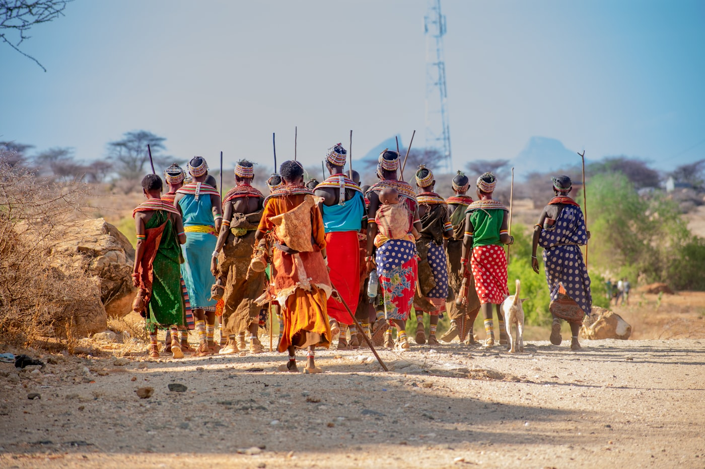

Six pillars. One investment. Engineered to last.
We tackle drought as a system, not a symptom — so a single deployment advances water, health, education, ecosystems, livelihoods and climate resilience together.
Interconnected by design
Each pillar reinforces the next. Water unlocks health and time; time unlocks education; livelihoods and ecosystems make the gains permanent.
Water & Food Security
The foundation of everything we do. We capture and store rain where it falls — household tanks, communal water pans and county dams — and pair it with water-smart agriculture so families stay fed through the dry season.
- 1B+ litres of rainwater harvested to date
- Water pans, dams & drip-fed smart agriculture


Health & Quality of Life
Clean water and sanitation cut waterborne disease and end the daily, hours-long walk for water that falls hardest on women and girls. Health is where water security becomes human dignity.
- Safe drinking water at the point of need
- Reclaimed time for school, work & family
Education & Knowledge Transfer
We don't install and leave. We train communities to operate and maintain every system, and we support schools so the next generation inherits both water and the know-how to protect it.
- Operations & maintenance training
- School partnerships & vocational skills


Biodiversity Protection & Conservation
Over two million trees planted — and crucially, every one GPS-tagged and tracked to survival, not just planting day. Restoring ecosystems is how we make resilience permanent.
- 2M+ trees, each GPS-tagged & monitored
- Ecosystem & watershed restoration
Livelihood Diversification & Empowerment
Water security unlocks income. We help communities — especially women and youth — build enterprises around their new resources, from coffee to honey. Our "Beans to Trees" program proves the model replicates and pays.
- Women- & youth-led enterprises
- "Beans to Trees" — replicable & ESG-ready


Climate Resilience
Everything we build is engineered for a harsher climate — drought-adapted infrastructure and practices designed specifically for the arid and semi-arid lands, so the gains hold as conditions worsen.
- Drought-adapted, ASAL-specific engineering
- Adaptation that compounds over time
How a deployment actually runs
Illuminate → Tailor → Build → Empower → Multiply. A disciplined five-phase path that makes results repeatable and reportable, county after county.
Illuminate
Map the water reality with data to find the highest-leverage intervention.
Tailor
Design a right-sized solution and Pack tier for that specific community.
Build
Construct with local labour — keeping skills and income in the community.
Empower
Train residents to own and maintain systems, and launch livelihoods.
Multiply
Verify on the dashboard, document the proof, replicate to the next community.
Fund a system that does six jobs at once.
Pick a Pack and we'll engineer the full stack — water, health, education, ecosystems, livelihoods and climate resilience — all verified.